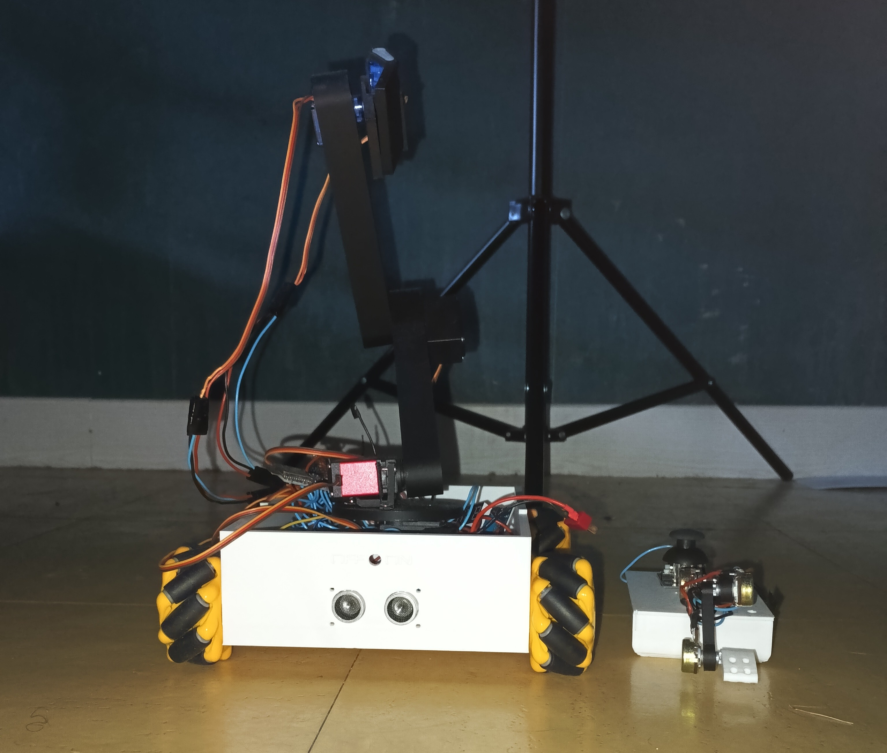
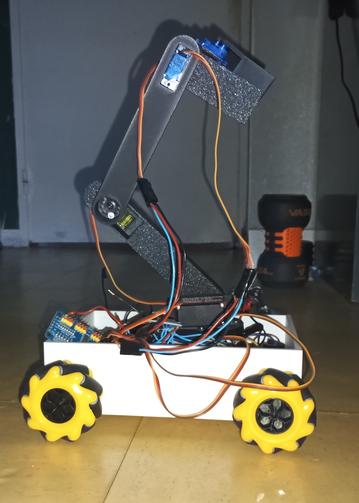
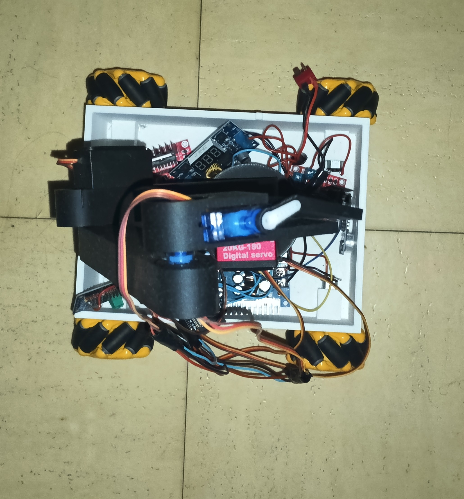
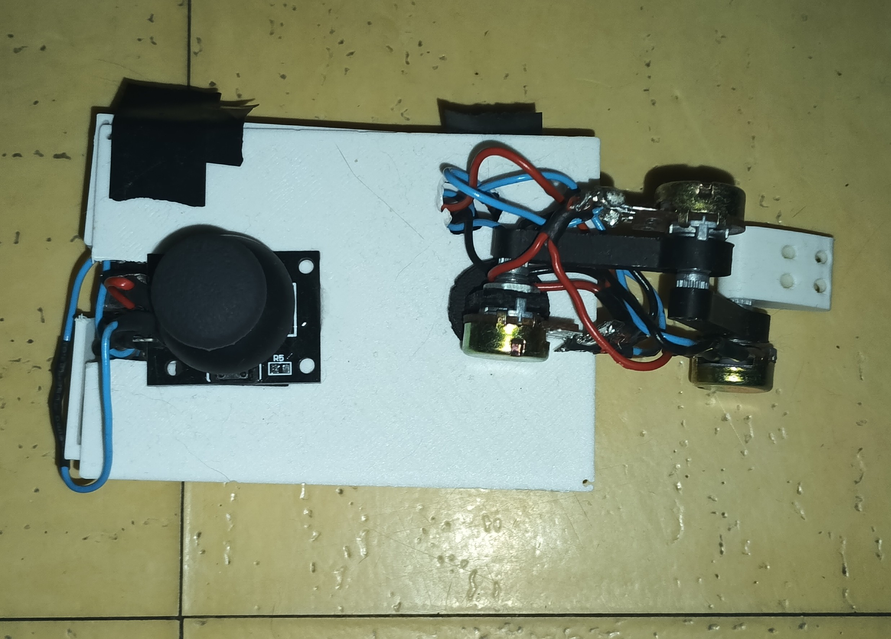
Atom is my first real hardware+software project. I called it "Atom" because that's the name of the main robot in "Real Steel" and just like in the movie my Atom is teleoperated by replicating a second arm and I already got hit by my own Atom when working to close of it. I made it for my oral exam in 9th grade, my subject was "The robotic in industry and medecine" and I had an idea when seeing this subject: "Robotic arms are very used in industry and medecine, so the best ways to demonstrate it is to build one". the project shift a bit so I gave it a mobile base to make it more versatile. Unfortunatly, Atom worked very well 5 hours before the presentation(my presentation was at 9am), and when I turn it on at the presentation...the ubec blowed up... I was a bit sad but I did my presentation without it and I suceed to get a 19/20(After google, in America's grade system it is an A+). In vacation I repaired the problem...and I discovered new ones but I repaired them too. I'm proud of this project but I'm not satisfied, I just add the time to make a working robot so it is not really finished and there is a LOT of room for upgrades and I really find this arm design too sketchy. I don't have the money to finish it right now but with my mention "very good" at my final exam last year: "le brevet", I have a "bourse" every trimester to finance my projects.
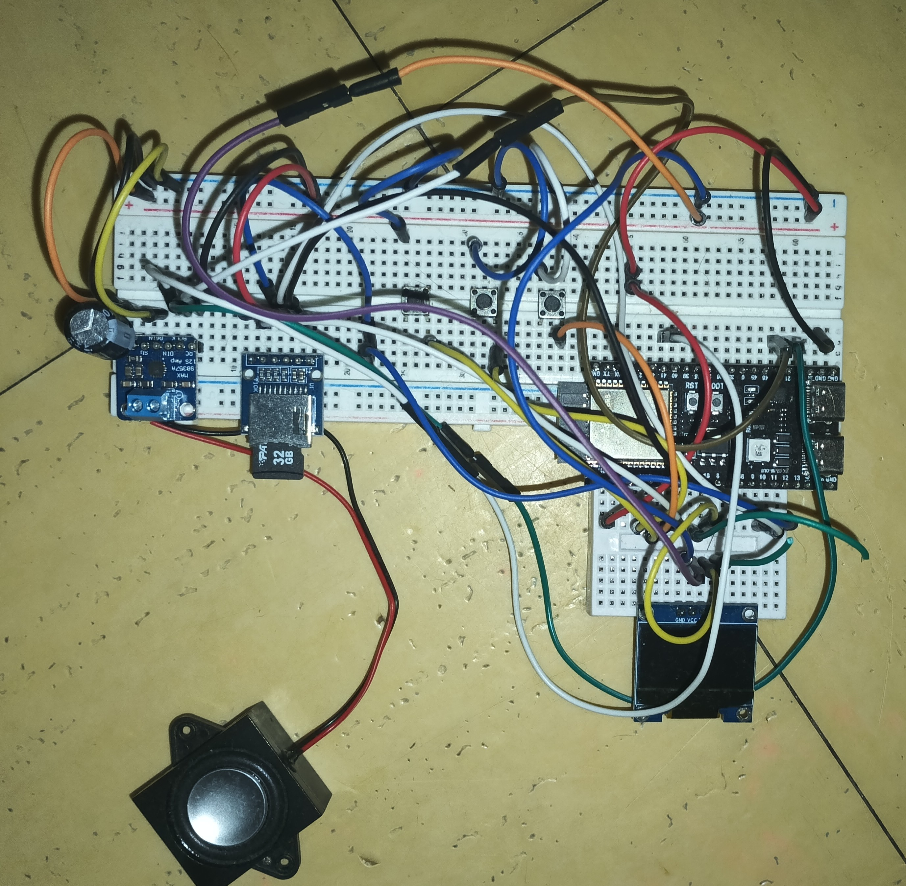
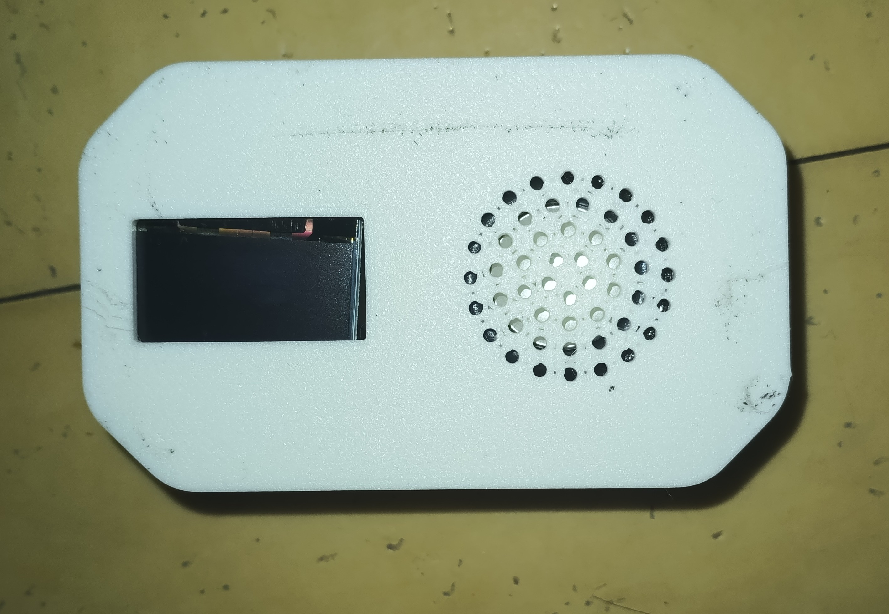
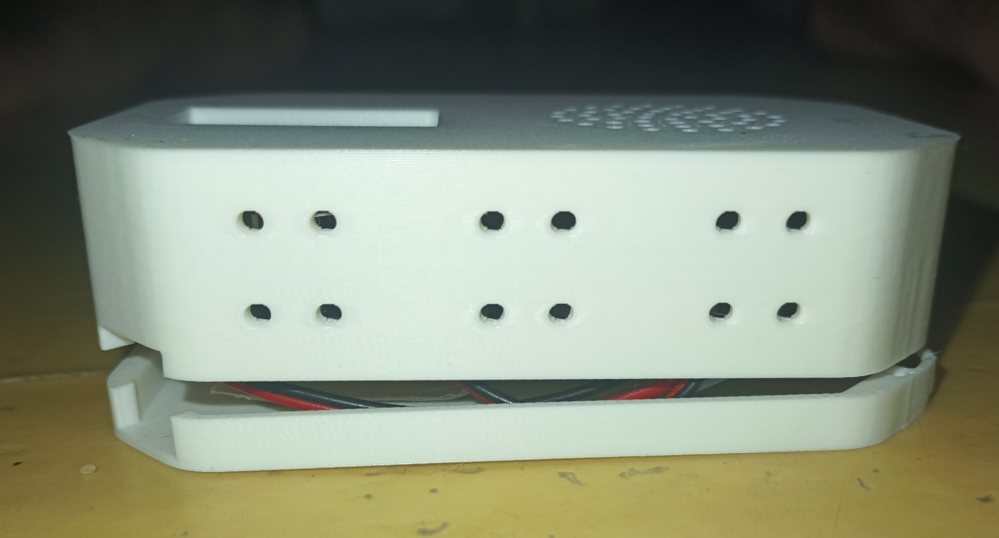
This music player is another project I made during great vacation. I started listening a lot of music 2 months before and I found 3 problems. First, I listen on youtube without the premium subscription so there is often pubs. Secondly, I always need wifi to listen music and sometimes on trip there's no cellular signal and thirdly, listening to music all the time display on my phone a huge screentime on youtube but I don't watch it. It was a good project with a lot of the time making it was for the software(it is not even finished because there is one missing feature for the bluetooth), as you can see on the images the prototype is complete and now I'm working on the final product, I just need to get a bluetooth module that I found but I cant buy it right now to connect bluetooth devices and I plan to make more to sell them.
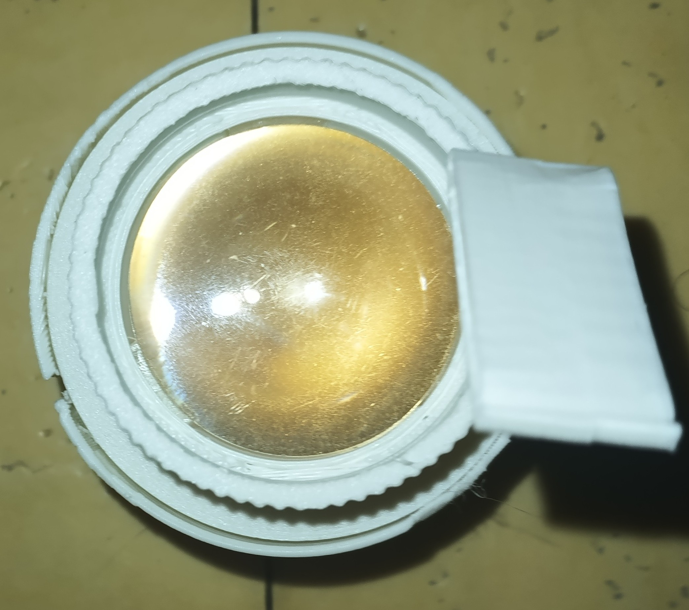
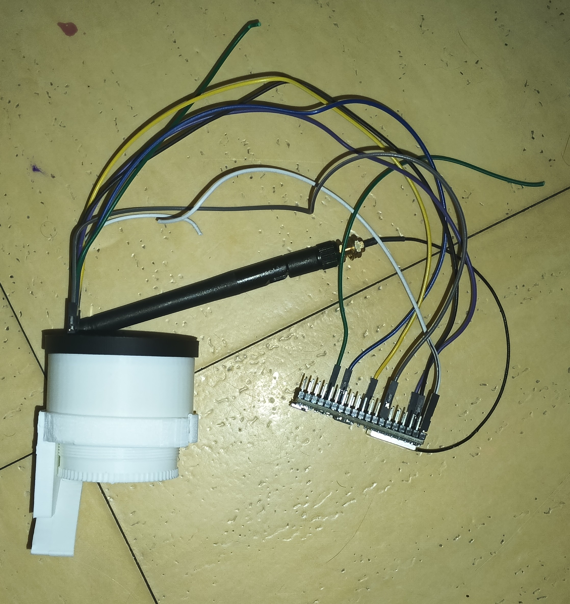
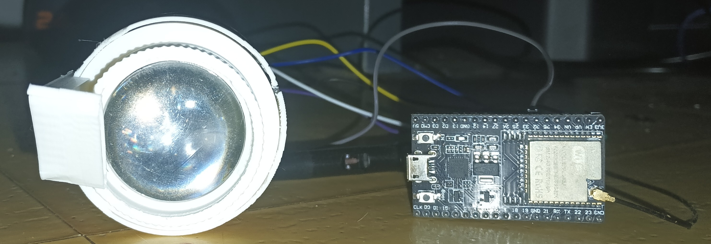
Open reality is a project that I got in mind during the great vacation and I start it ~1 month ago. It is an AR glasses project and as you can see on the pictures it's obvious that this project isn't finish yet(+my cat cut some wires +my semi reflective piece of glass broke). Right now, Open Reality just shows the time in the field of view of the user but I want to make it communicate with some APIs to show info about busses/trains traffic, show pronote info, connect to my phone, use imu to know where's the north and couple it with a gps module and make games, use a camera to detect hands and text to translate languages even the sign langague so it means image recognition and it will be a bit difficult without fast hardware to do ai and play a smooth video stream but use the cam to know the position of my hands and control one or two robotic arm from anywhere with a video stream in the field of view of the user, just imagine, your in the train and you know that you have a lot to do when you come home so you activate your glasses and start fold clothes or prepare your dish with the help of robotics arm translating you hands position into position to go.
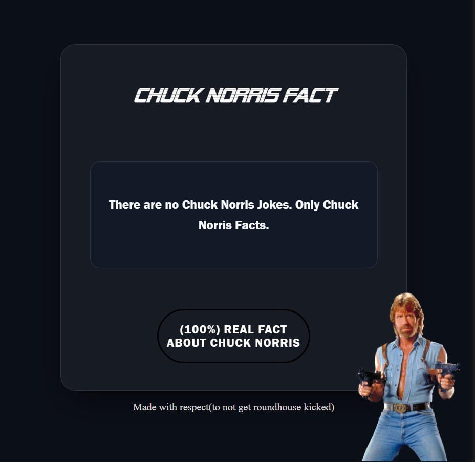
Chuck_fact is a website I made yesterday and it's simple, when you click on the button to get a real fact about Chuck Norris the website send a request to a Chuck Norris API and show the response on the screen. It was a good project to re enter into html, css and javascript.